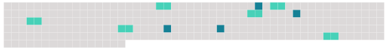

Longueur nb maillons : 10 mentions |
 |
Il dévoilait leurs pensées, leurs intentions, les analysait, les expliquait : « Quand Médor a vu que [le râle] le faisait courir ainsi, il s'est dit : « [Attends] , [mon gaillard] , nous allons rire. » Alors, en me faisant signe de la tête d'aller me placer au coin du champ de trèfle, il s'est mis à quêter de biais, à grand bruit, en remuant les herbes pour pousser [le gibier] dans l'angle où [il] ne pourrait plus échapper. Tout est arrivé comme il l'avait prévu ; [le râle] , tout d'un coup, s'est trouvé sur la lisière. [4 phrases] --Brrrou- [-le râle] s'envole--j'épaule--pan!! - [-il] tombe ; et Médor, en [le] rapportant, remuait la queue pour me dire : « Est -il joué, ce tour -là, monsieur Hector?? [1 phrases] Il s'animait, remuait les bras, gesticulait de tout le corps ; et quand il disait la mort [du gibier] , il riait d'un rire formidable, et demandait toujours comme conclusion : « Est -elle bonne, celle -là?? |
 |
Il est possible de télécharger la ressource sur la page Ortolang |
Si vous avez des questions ou vous voyez des erreurs, merci d'envoyer un mail à silvia.federzoni89@gmail.com |